Horizontal Saccades
- Visually-guided saccades are triggered by seeing a target in the peripheral visual field or by the desire to fixate an unseen target
- Visual signal goes to the visual cortex, then to the occipital-parietal junction and frontal gaze centers, down to the superior colliculus and contralateral pontine paramedian reticular formation (PPRF), silencing omnipause neurons and activating burst cells to sustain eccentric gaze
- PPRF connects to the medullary nucleus prepositus hypoglossi (NPH) and medial vestibular nucleus (MVN)
- NPH and MVN link to the cerebellar vermis and back to the PPRF to maintain accuracy of saccadic movements
- PPRF sends a signal to the ipsilateral sixth nerve nucleus, which connects through fascicular axons to the ipsilateral sixth nerve nucleus and through the medial longitudinal fasciculus (MLF) to the contralateral medial rectus subnucleus to drive adduction of the other eye
- For non-visually guided horizontal saccades, the cerebral signal originates in the frontal gaze center rather than in the occipital-parietal gaze center, but otherwise the same pathway is used
-
Tip: not all saccades are voluntary! Reflexive saccades (“quick phases”) occur automatically to counteract the slow conjugate ocular drift in jerk nystagmus and as the rapid eye movements of sleep; these involuntary saccades are probably generated within the brainstem
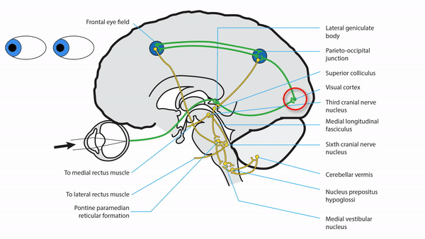
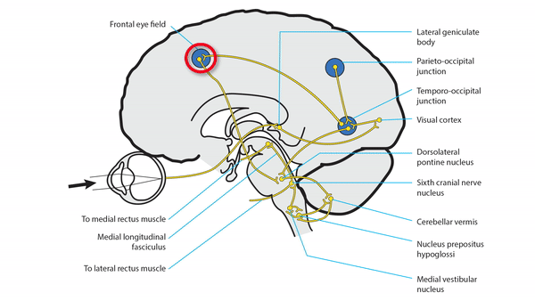
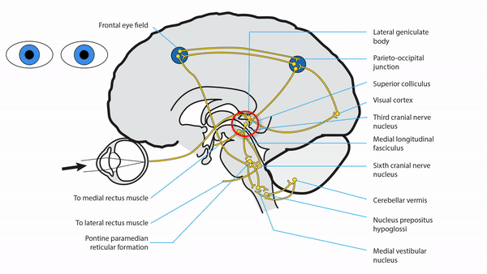
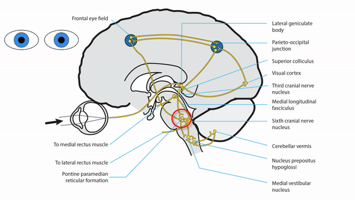

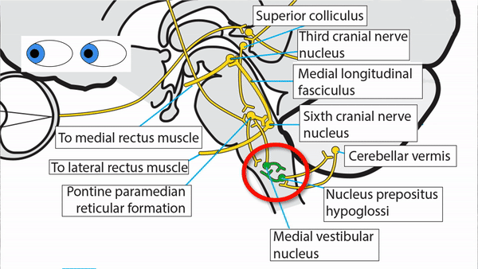
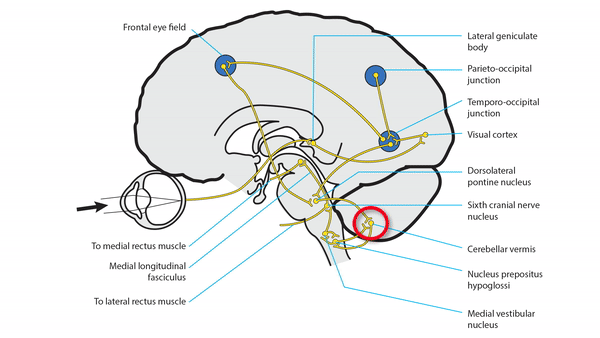
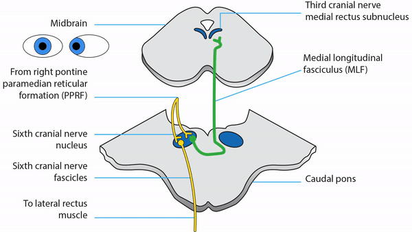
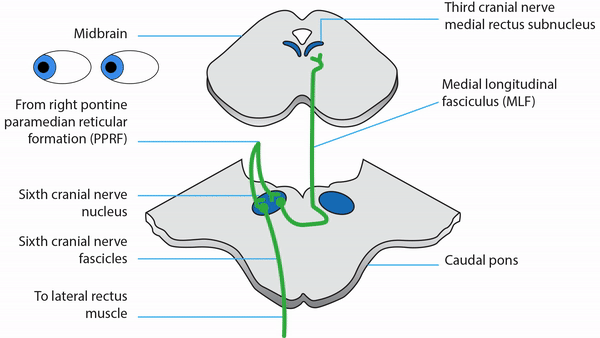
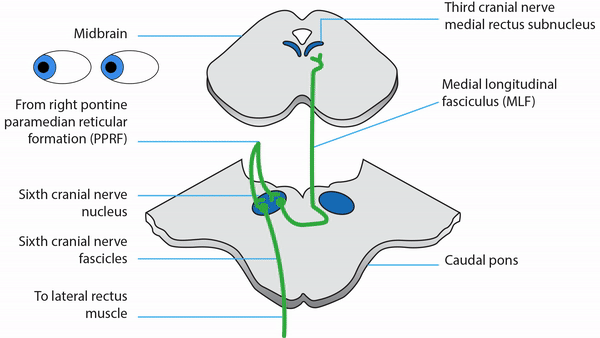
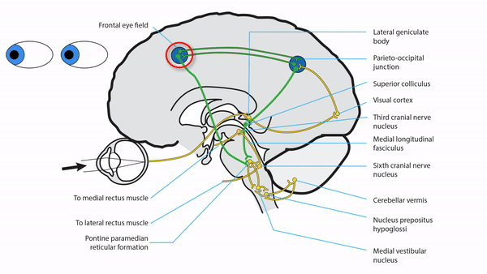
-
Unilateral cerebral lesion
- May produce ipsilateral horizontal gaze deviation and reduced contralaterallly-directed horizontal saccades
- Spares the vestibulo-ocular reflex (VOR) because that pathway is confined to the brainstem
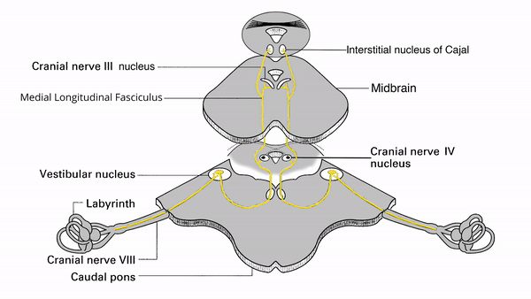 -
Bilateral cerebral lesions
-
May produce impaired volitional saccades and pursuit in all directions, sparing the vestibulo-ocular reflex (supranuclear gaze palsy)
- Congenital variant is called “congenital ocular motor apraxia;” usually spares vertical gaze and produces distinctive horizontal head thrusts; often resolves spontaneously by the second decade of life
- Acquired variant is called “acquired ocular motor apraxia”
-
May produce impaired volitional saccades and pursuit in all directions, sparing the vestibulo-ocular reflex (supranuclear gaze palsy)
-
Thalamic lesion
- May impair abduction by stimulating convergence (“pseudo abducens palsy”)
-
Midbrain lesion
- May impair adduction as part of third nerve palsy or internuclear ophthalmoplegia
- Pontine lesion
- Medullary lesion
- Cerebellar lesion
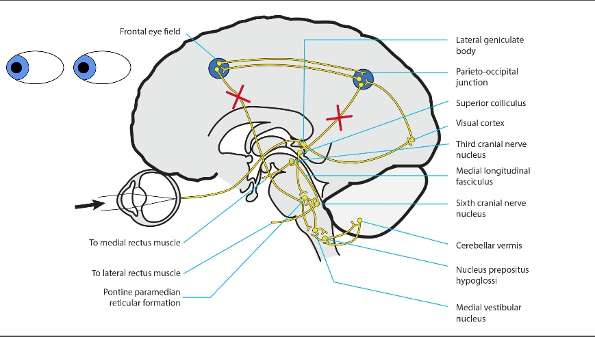
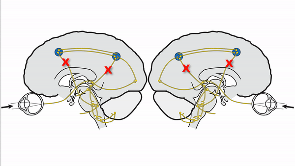
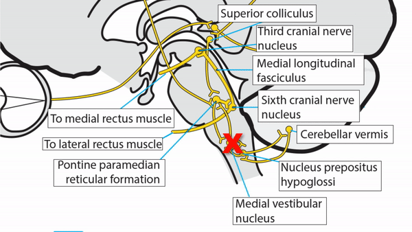
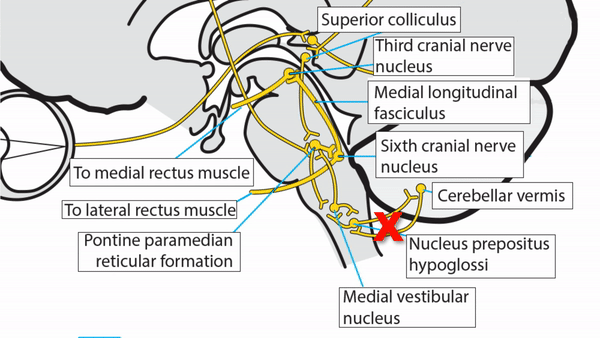